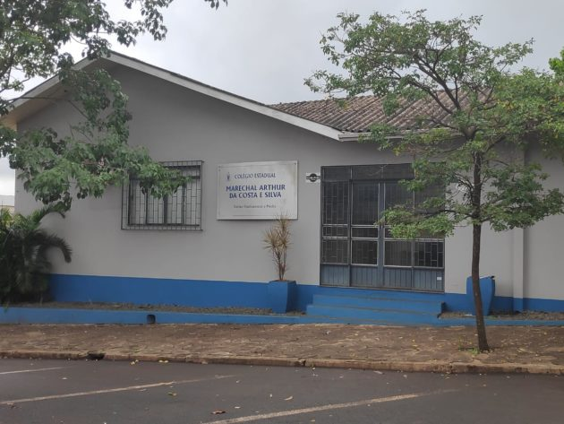

- Escola
- Estudante
O Colégio foi fundado em 1962, na época era um grupo escolar Joaquim Oliveira Franco, e funcionava no Cesum do Clube União, e tinha apenas 90 alunos.
No decorrer do tempo o colégio foi ampliando e em 1978 passou a ser Colégio Estadual Marechal Arthur da Costa e Silva
